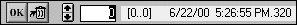
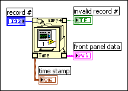
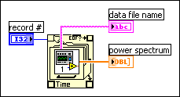
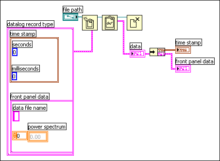

Use front panel data logging to record data for use in other VIs and in reports. For example, you can log data from a graph and use that data in another graph in a separate VI.
|
Note��LabVIEW does not support front panel data logging through remote panels. |
Each time a VI runs, front panel data logging saves the front panel data to a separate datalog file, which is in binary format.
A datalog file contains records that include a time stamp and the data from each time you ran the VI. When you access a datalog file, you select which record you want by running the VI in retrieval mode and using the front panel controls to view the data. When you run the VI in retrieval mode, a numeric control appears at the top of the front panel, as follows, so you can navigate among the records.

Select Operate�Log at Completion to enable automatic logging. The first time you log front panel data for a VI, LabVIEW prompts you to name the datalog file. You can use any file extension, for example .dat or .txt, for datalog files. LabVIEW logs data each time you run the VI and appends a new record to the datalog file each additional time you run the VI. You cannot overwrite a record after LabVIEW writes it to a datalog file.
To log your data interactively, select Operate�Data Logging�Log. LabVIEW appends the data to the datalog file immediately. Log your data interactively so you can select when to log the data. Logging your data automatically logs the data each time you run the VI.
|
Note�� A waveform chart logs only one data point at a time with front panel data logging. If you wire an array to the chart indicator, the datalog file contains a subset of the array the chart displays. |
After you log data, you can view it interactively by selecting Operate�Data Logging�Retrieve. The data retrieval toolbar appears as follows.
The highlighted number indicates the data record you are viewing. The numbers in square brackets indicate the range of records you logged for the current VI. You log a record each time you run the VI. The date and time indicate when you logged the selected record. View the next or previous record by clicking the increment or decrement arrows. You also can use the up and down arrow keys on your keyboard.
In addition to the data retrieval toolbar, the front panel appearance changes according to the record you select on the toolbar. For example, when you click the increment arrow and advance to another record, the controls and indicator display the data for that particular record at the time you logged the data. Click the OK button to exit retrieval mode and return to the VI whose datalog file you were viewing.
While in retrieval mode, you can delete specific records. Mark for deletion an individual record in retrieval mode by viewing that record and clicking the Trash button. If you click the Trash button again, the record is no longer marked for deletion.
Select Operate�Data Logging�Purge Data while in retrieval mode to delete all the records you marked for deletion.
If you do not delete your marked record before you click the OK button, LabVIEW prompts you to delete the marked records.
Use log-file binding to associate a VI with the datalog file to use when logging or retrieving front panel data. You can have two or more datalog files associated with one VI. This might help you test or compare the VI data. For example, you could compare the data logged the first time you run the VI to the data logged the second time you run the VI. To associate more than one datalog file with a VI, you must clear the log-file binding by selecting Operate�Data Logging�Clear Log File Binding. LabVIEW prompts you to specify a datalog file the next time you run the VI either with automatic logging enabled or when you choose to log data interactively.
Change the log-file binding to log front panel data to or retrieve front panel data from a different log file by selecting Operate�Data Logging�Change Log File Binding. LabVIEW prompts you to select a different log file or to create a new one. You might change log-file binding when you want to retrieve different data into a VI or append data from the VI to another datalog file.
You also can retrieve logged data using a subVI or using the File I/O VIs and functions.
When you right-click a subVI and select Enable Database Access from the shortcut menu, a yellow box appears around the subVI, as shown in the following block diagram.

The yellow box that looks like a filing cabinet includes terminals for accessing data from the datalog file. When you enable database access for the subVI, the inputs and outputs of the subVI actually act as outputs, returning their logged data. record # indicates the record to retrieve, invalid record # indicates whether the record number exists, timestamp is the time the record was created, and front panel data is a cluster of the front panel objects. You can access the data of a front panel object by wiring the front panel data cluster to the Unbundle function.
You also can retrieve values for specific inputs and outputs by wiring directly to the corresponding terminal on the subVI, as shown in the following block diagram.

If you run the VI, the subVI does not run. Instead, it returns the logged data from its front panel to the VI front panel as a cluster.
|
Note��If you display a subVI or an Express VI as an expandable node, you cannot enable database access for that node. |
The subVI has n logged records, and you can wire any number from �n to n � 1 to the record # terminal of the subVI. You can access records relative to the first logged record using non-negative record numbers. 0 represents the first record, 1 represents the second record, and so on, through n � 1, which represents the last record.
You can access records relative to the last logged record using negative record numbers. �1 represents the last record, �2 represents the second to the last, and so on, through �n, which represents the first record. If you wire a number outside the range �n to n � 1 to the record # terminal, the invalid record # output is TRUE, and the subVI retrieves no data.

Use the default LabVIEW Data directory to store the data files LabVIEW generates, such as .lvm or .txt files. LabVIEW installs the LabVIEW Data directory in the default file directory for your operating system to help you organize and locate the data files LabVIEW generates. By default, the Write To Measurement File Express VI stores the .lvm or .tdm files it generates in this directory, and the Read From Measurement File Express VI reads from this directory. The default data directory constant and the Application:Default:Data Directory property also return the LabVIEW Data directory by default.
Select Tools�Options and select Paths from the Category list to specify a different default data directory. The default data directory differs from the default directory, which is the directory you specify for new VIs, custom controls, VI templates, or other LabVIEW documents you create.
The text-based measurement file (.lvm) includes data the Write To Measurement File Express VI generates. The text-based measurement file is a tab-delimited text file you can open with a spreadsheet application or a text-editing application. In addition to the data an Express VI generates, the .lvm file includes information about the data, such as the date and time the data was generated. LabVIEW saves data with up to six digits of precision in a .lvm file.
Use the Read From Measurement File Express VI to read data from a .lvm file.
The .lvm file uses commas as delimiters between numbers. To convert data in a .lvm file from a string to a number, specify the decimal separator as a period by using the localization code format specifier.
Refer to the following support document at ni.com for more information about .lvm files.
The binary measurement file (.tdm or .tdms) includes data the Write To Measurement File Express VI, the Storage/DataPlugin VIs, or the TDM Streaming VIs and functions generate. The .tdm file uses an XML-based format to store waveform properties and links to a binary file that contains waveform data. The .tdms file stores waveform properties and is a binary file that contains waveform data. Binary measurement files provide higher accuracy, take up less space on disk, and perform faster than LabVIEW measurement data files (.lvm).
You can use a binary measurement file to exchange data between NI software, such as LabVIEW and DIAdem.
(Windows) You can use the Read From Measurement File Express VI and the Write To Measurement File Express VI to read data from and write data to .tdm files. You can use the Storage/DataPlugin VIs to read data from and write data to .tdm files. You can use the TDM Streaming VIs and functions to read data from and write data to .tdms files.
|
Note��(MathScript RT Module) You also can use the MathScript RT Module save function and the load function to save variables to and load variables from .tdm or .tdms files. |